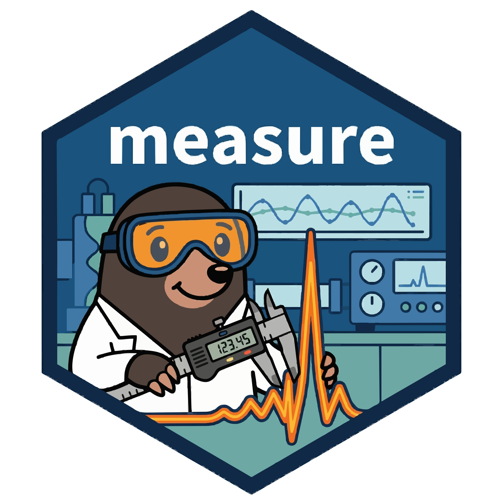

Create and validate an analytical measurement record
Source:R/record.R
measure_record.RdA measure_record connects samples, injections, channels, sources, and
independent one-dimensional curves. Curve payloads remain ordinary
measure_list data (see new_measure_list()); the record adds explicit identities and declared axis
and signal metadata without changing or aligning the points.
Usage
measure_record(
samples = NULL,
injections = NULL,
channels = NULL,
curves = NULL,
sources = NULL
)
# S3 method for class 'measure_record'
print(x, ...)Arguments
- samples
A data frame with the required
sample_idcolumn, orNULLfor an empty table.- injections
A data frame with required
injection_idandsample_idcolumns, orNULLfor an empty table.- channels
A data frame with required
channel_idand optionalchannel_namecolumns, orNULLfor an empty table.- curves
A data frame with required
curve_id,injection_id,channel_id, and.measurescolumns, orNULLfor an empty table. Nullable metadata columns and.source_rowsmay be omitted.- sources
A data frame with required
source_idand optionalsource_nameandsource_sha256columns, orNULLfor an empty table.- x
A measurement record to print.
- ...
Additional arguments; currently unused.
Value
A plain S3 list with class measure_record and exactly five
canonical tibble components: samples, injections, channels,
curves, and sources.
Details
Each table has a fixed schema. samples has one row per sample_id;
injections has one row per injection_id and refers to a sample;
channels has one row per channel_id; sources has one row per
source_id; and curves has one row per curve_id and refers to one
injection and channel. A curve may also refer to a declared source.
Unused sample, injection, channel, and source rows are retained.
IDs are explicit UTF-8 character strings. They are not trimmed, inferred,
or generated. A missing source_id means that the curve has no declared
source; nonmissing source IDs must be present in sources. Units and names
are opaque declarations: this function does not infer or convert units.
Each curve payload must contain only numeric location and value
columns. Locations must be finite and strictly monotonic in either
direction. Values may be finite or NA_real_. Curves may have different
lengths, spacing, and direction. The .source_rows list column stores
optional positive parsed-record ordinals aligned to each point; missing
ordinals are represented by NA_integer_ and are not physical text line
numbers. The constructor converts integer location and value vectors to
double and normalizes negative zero to positive zero. Revalidation rejects
a record mutated to contain negative zero.
NULL tables create typed empty tables. When a table is supplied, required
columns must be present; omitted nullable columns are filled with typed
missing values. Unknown and duplicate columns are rejected. The input
objects are not modified.
Examples
curve <- new_measure_tbl(
location = c(250, 251, 252),
value = c(0.02, NA_real_, 0.04)
)
record <- measure_record(
samples = tibble::tibble(sample_id = "sample-01"),
injections = tibble::tibble(
injection_id = "injection-01",
sample_id = "sample-01"
),
channels = tibble::tibble(channel_id = "uv", channel_name = "UV"),
curves = tibble::tibble(
curve_id = "curve-01",
injection_id = "injection-01",
channel_id = "uv",
.measures = list(curve)
)
)
record
#> <measure_record>
#> Samples: 1
#> Injections: 1
#> Channels: 1
#> Curves: 1
#> Sources: 0